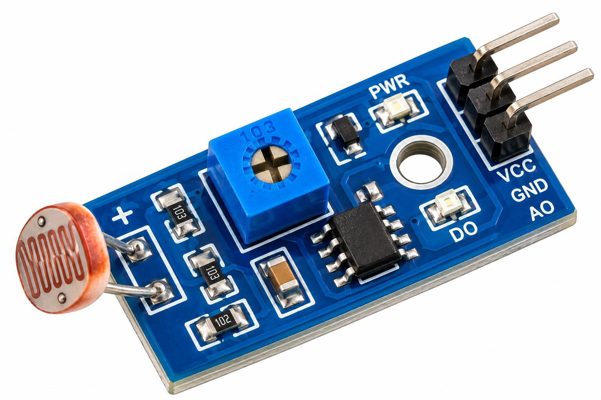

Aim
To capture a JPEG image automatically when the ambient light level changes significantly using an LDR, while showing light level and capture status on an OLED display.
About the Experiment
The ESP32-CAM reads an LDR voltage divider through GPIO 2 and converts the ADC reading into an approximate light percentage.
A change of 15 percentage points from the reference value triggers an OV2640 JPEG capture.
The OLED displays the current light level, monitoring status and capture count. This version does not use Wi-Fi and the captured JPEG is held temporarily in RAM.
Components Required

AI-Thinker ESP32-CAM with OV2640 (×1)
Main controller and camera module.

LDR (×1)
Measures ambient light level.

10KΩ Resistor (×1)
Forms the LDR voltage divider.

I²C OLED 128×64 (×1)
Displays light level and capture status.

USB-to-TTL Programmer (×1)
Used to program and power the ESP32-CAM.

Breadboard (×1)
Used to assemble the sensor circuit.

Jumper Wires
Used for electrical connections.
Circuit Connections
| Component | Pin | ESP32-CAM Connection |
|---|---|---|
| LDR | One leg | 3.3V |
| LDR | Other leg | GPIO 2 |
| 10KΩ Resistor | One leg | GPIO 2 |
| 10KΩ Resistor | Other leg | GND |
| OLED | VCC | 3.3V |
| OLED | GND | GND |
| OLED | SDA | GPIO 13 |
| OLED | SCL | GPIO 14 |
| USB-TTL | 5V | 5V |
| USB-TTL | GND | GND |
| USB-TTL | TX | U0R / GPIO 3 |
| USB-TTL | RX | U0T / GPIO 1 |
Circuit Diagram

Working Principle
↓
OLED and Camera Initialize
↓
LDR Reading Becomes Reference
↓
Light Checked Every 1 Second
↓
Current Light Compared with Reference
↓
Change ≥ 15 Percentage Points
↓
OV2640 Captures JPEG
↓
OLED Shows CAPTURE! and Count
↓
New Light Value Becomes Reference
Procedure
- Connect the LDR and 10KΩ resistor as a voltage divider on GPIO 2.
- Connect OLED SDA to GPIO 13 and SCL to GPIO 14.
- Connect the USB-TTL programmer to 5V, GND, U0R and U0T.
- Connect GPIO 0 to GND only during uploading.
- Upload the sketch and remove GPIO 0 from GND.
- Press RESET and open Serial Monitor at 115200 baud.
- Observe the initial light percentage.
- Change the light level enough to cross the 15-point threshold.
- Confirm that a JPEG frame is captured and the OLED capture count increases.
Explore the Code
#include "esp_camera.h"
#include <Wire.h>
#include <Adafruit_GFX.h>
#include <Adafruit_SSD1306.h>
#define OLED_SDA 13
#define OLED_SCL 14
#define OLED_ADDR 0x3C
#define LDR_PIN 2
#define CHANGE_THRESHOLD 15
#define CHECK_INTERVAL 1000
int previousLight = 0;
int currentLight = 0;
int captureCount = 0;
void loop()
{
int rawValue = analogRead(LDR_PIN);
currentLight =
map(rawValue,0,4095,0,100);
int difference =
abs(currentLight - previousLight);
if(
difference >=
CHANGE_THRESHOLD
)
{
captureImage();
previousLight =
currentLight;
}
showStatus();
}
Check Your Understanding
- Identify the main input used by this Experiment.
- Identify the main output or actuator controlled by the ESP32-CAM.
- Check the GPIO numbers in the Circuit Connections table before wiring.
Expected Output
The OLED shows the current light percentage, monitoring status and capture count.
A 15 percentage-point change in light triggers a camera capture.
The Serial Monitor reports the current light, reference light, change percentage and image size.
The captured JPEG exists temporarily in RAM and is not permanently saved.
Result
The ESP32-CAM Light-Activated Camera successfully monitors ambient light and captures a JPEG image whenever the configured light-change threshold is reached.
What You Learn
- Reading an LDR using an ESP32-CAM ADC input.
- Building an LDR voltage divider.
- Using an I²C OLED with GPIO 13 and GPIO 14.
- Initializing the OV2640 camera.
- Detecting threshold-based light changes.
- Capturing JPEG frames into RAM.